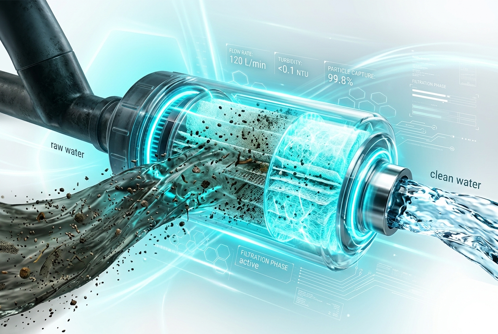
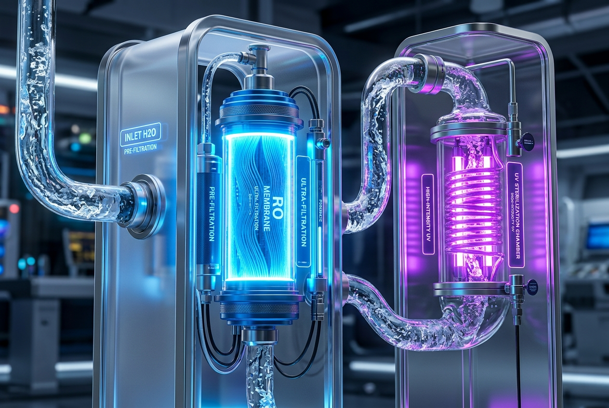
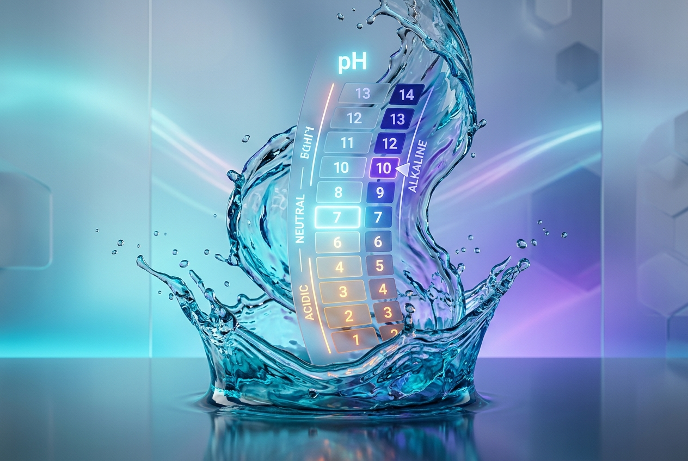
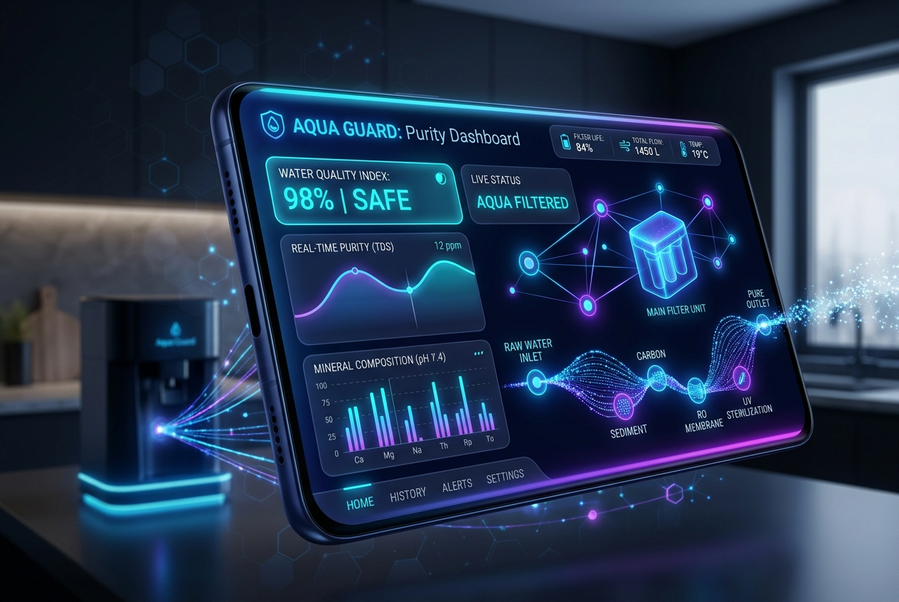
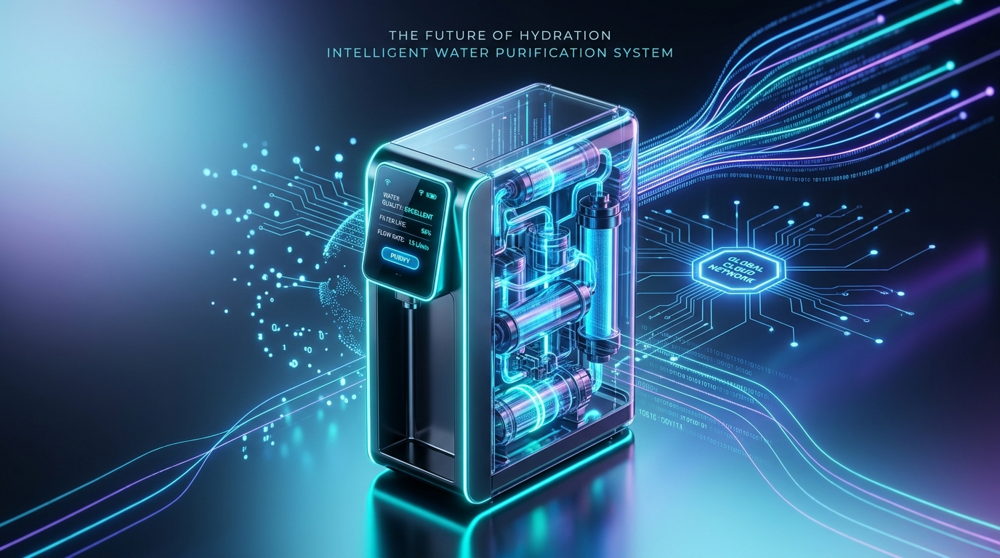
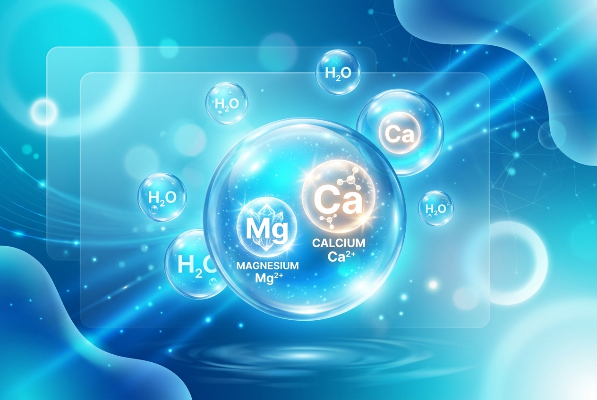
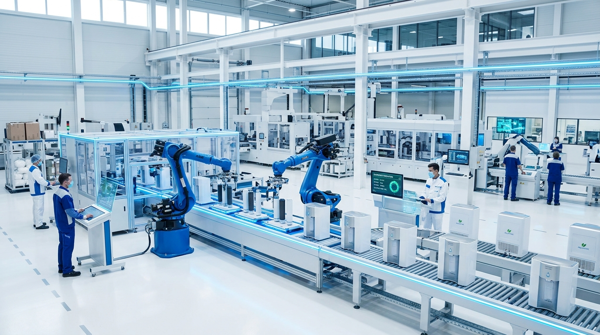

Purity in Every Drop, Tracking in Every Second
HydroPure offers next-generation RO & UV water purifiers backed by Annual Maintenance Contracts (AMC) and an interactive customer dashboard.
Our Purification Journey
Follow the molecular cycle as raw input is refined into high-grade purity.

Raw Intake Filtration
Multi-stage sediment filters capture dust, rust, and visible physical impurities, preparing the water stream.

RO + UV Purification
High-pressure RO membranes block dissolved chemical solids, while UV-C light deactivates bacteria and viruses.

Pure Alkaline Output
Post-carbon carbon and alkaline cartridges enrich pure water with essential minerals, delivering delicious balanced pH drinking water.
Active Purification Dynamics
Our next-generation systems integrate continuous real-time diagnostic telemetry, automated self-cleaning membrane arrays, and deep learning analytics to maximize system uptime.

Dashboard Tracking
Check live TDS levels, monitor AMC service schedules, and request replacement visits in a click.

Smart Filtration
Micro-adjusting backwash cycles dynamically activate depending on input turbidity, saving significant volumes of rinse water.

Advanced Membranes
Cross-linked aromatic polyamide molecular grids optimize permeability, securing premium salt rejection and chemical resilience.

Automated Systems
PLC-driven multi-valve actuators allow for completely unattended system operation, automated flushing, and safety trips.
Explore Our Engineering Solutions
Hover to tilt and reveal advanced specifications of each standard water system tier.
Industrial Systems
Designed for thermal energy boilers, microelectronics rinsing, and pharmaceutical loops, delivering absolute pure feed streams.
Municipal Plants
High-capacity civil treatment complexes providing standard safe tap drinking water grid supplies to millions of residents.
Home Solutions
Compact, premium under-sink and whole-house filtration setups utilizing multi-barrier reverse osmosis technology for pure residential drinking water.
Global Impact Dashboard
Tracking our clean water yields, infrastructure deployments, and ecological preservation footprint.
Water Recycled
Percentage of industrial input water successfully purified and recycled back into operation loops.
Completed Projects
Over 1,200 large-scale water treatment plant commissions worldwide, from utilities to energy hubs.
Cities Served
Municipal drinking water infrastructure grids deployed across major global metropolitan centers.
Carbon Offset
Reduction in processing energy footprint relative to legacy sand-filtration infrastructure standard.
Inside The Purification System
Click the active hot nodes on the flow diagram to inspect structural specifications and fluid animations.
3. High-Density RO Membrane
Thin-film composite (TFC) aromatic polyamide membrane. Operates under high hydraulic pressure to separate heavy metals, fluorides, chemical salts, and micro-plastics from the pure water stream.
Salt rejection: 99.8% | Filter capacity: 75-400 GPD | Pore size: 0.0001 microns
Choose Your HydroPure Plan Today
Get absolute peace of mind with our Annual Maintenance Contracts. Ensure fresh, pure drinking water with proactive filter replacements.
Explore Purifier & AMC Plans